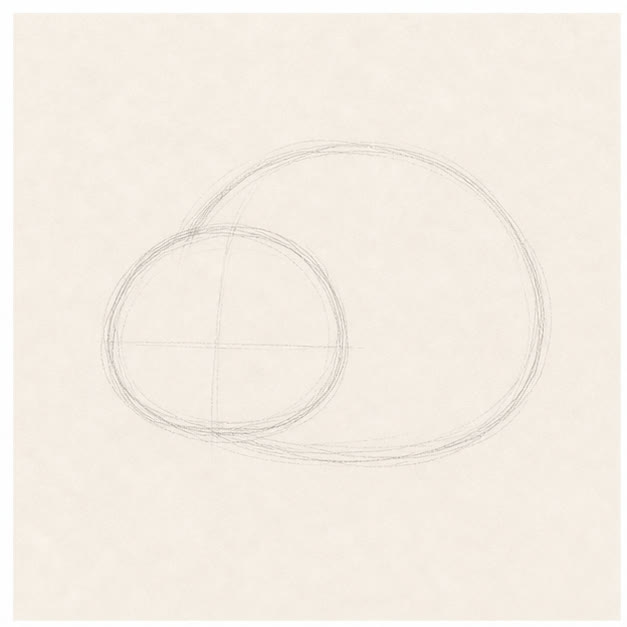
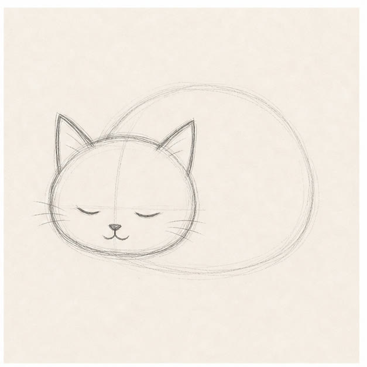
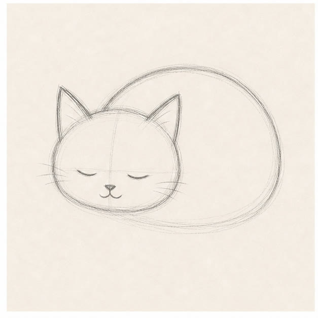
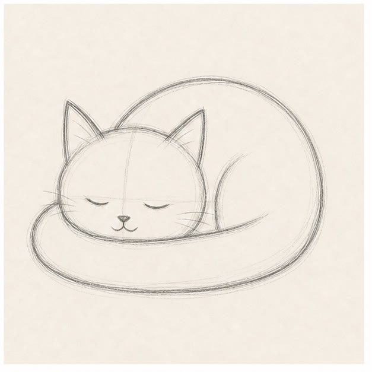

From the archive
Let's draw a sleepy cat
Work lightly through the construction, then darken only the lines that help the finished sketch.
-
01

Place two soft shapes
Draw a wide oval for the curled body and overlap it with a smaller circle for the head.
Sketch tip: Keep the head low. A sleepy pose feels heavier when the chin sits close to the body.
-
02

Add the ears and face
Set two triangles on the head circle. Use two shallow curves for closed eyes and a tiny center line for the nose.
Sketch tip: Closed eyes curve upward only slightly. Too much curve can turn the nap into a grin.
-
03

Find the curled outline
Follow the oval around the back and belly. Join it to the cheeks, leaving a small tucked-paw bump underneath.
Sketch tip: Use one slow line across the back. Small wobbles are fine, but avoid lots of short furry marks.
-
04

Wrap the tail around
Start behind the body, loop the tail around the front, and let its top edge cross the tucked paws.
Sketch tip: Make the tail widest near the body and narrower at the tip so the curve stays readable.
-
05

Darken and add blue
Choose the contours you want to keep, then shade a few cool blue strokes along the body and tail.
Sketch tip: Leave most of the paper untouched. A small patch of color is enough to finish this sketch.